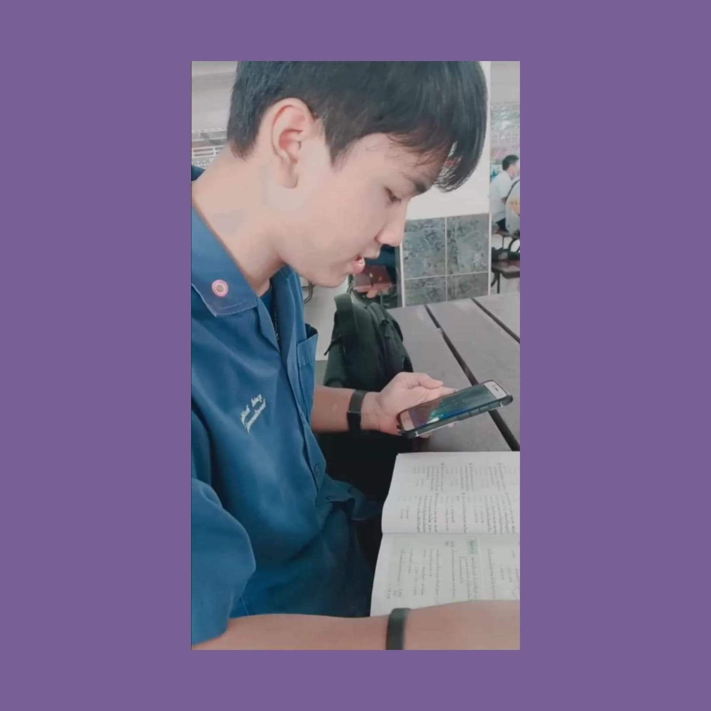

Thanathon Aubus
My Favoite Character


About
Sunwoo Han hails from South Korea, with possible links to the Insa-dong neighborhood in Seoul. As a chef in her early life, she was involved in an incident relating to her wind-like radiant powers at the restaurant she worked at, causing a "freak storm" that all but destroyed the building. Sunwoo fled the scene soon after. Later on, Sunwoo would be recruited by the VALORANT Protocol to become its tenth agent, "Jett". Whilst working for the Protocol however, an incident occurred in Venice that destroyed part of the city. When authorities issued warrants for the arrests of the perpetrators, one of them was revealed to look exactly identical to Jett. Though Jett herself had nothing to do with the mission, the rest of the world now believed that she was now a threat to them. She couldn't explain that it wasn't her to those she know outside of VALORANT, unable to even understand what was going on herself, and it left them feeling disgusted, horrified, and ashamed at her, forcing her to go on the run once more. It has since been understood that the lookalike was actually a mirror version of herself from another Earth, clearing Jett of any wrongdoing. Unable to reveal any info associated with the VALORANT Protocol however, and unable to convince anyone of her innocence in a population that knows nothing of alternate Earths, to the rest of the world Jett remains one of its most dangerous radiants. The wind is commonly known for being cool, but Jett is an aggressive agent who has a distinctive, sarcastic personality. Jett also has a cheeky, childish "in-your-face" attitude, seen commonly giving insults for feats she makes on the team and is always spouting her sheer amount of arrogance. Her self-confidence may feel as if she is disregarding her comrades' safety, but she has recognized that it is best to play with a team, albeit with some reluctance. She does show a much more friendly personality towards teammates. Her youth is apparent as she animatedly chats with her allies, and she can sometimes spitball whenever she's excited to share ideas.
My Skills
Speed
Energy
Strength
My Reputation
Jinnawat No.1. Hacker Roblox No.1.
หาโปรฟรี มีไวรัสก็ได้ครับไม่ว่ากัน
Tanaphat. ดารณีของผมอยู่ไหน !
รักดารณี.

Suttinun ใบหม่อนเท่านั้น !
ใบหม่อน No.1.
My Favorite Song
Contact Me
Thailand
Phone: +66 825704790
Email: dayzdis@hotmail.com
Lets get in touch. Send me a message: